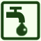

ASN = Aire de services avec stationnement nuit possible de :
GAVARNIE
(N° 721)
Accès/adresse :
Holle
65120 GAVARNIE
65120 GAVARNIE
Latitude : (Nord) 42.73857° Décimaux ou 42° 44′ 18′′
Longitude : (Ouest) -0.01961° Décimaux ou 0° 1′ 10′′
Tarif : 2015
Stationnement 8 à 18 h, services : 7 €
Type de borne : Artisanale
Services :



Commerces à Gavarnie à 300 m
Autres informations :
2 parkings
Eau non potable
http://www.gavarnie.com
Le 09/08/2012 par lepulch

Le 21/07/2012 par gerard du 27
Le 16/08/2011 par Jacques
Le 16/08/2011 par Jacques
de
Jacques64
le 06/05/2016 :
Située à la Grange de Holle. Evidemment saturée pendant les vacances ! La municipalité a ouvert un 2° parking juste au-dessus, toujours autant de monde en Juillet-Août. Attention, le stationnement nocturne est interdit au col des Tentes (parc national), je préfère me mettre sur le parking de la station de ski.
L'aire de vidange n'est pas pratique, il faut viser juste !
Située à la Grange de Holle. Evidemment saturée pendant les vacances ! La municipalité a ouvert un 2° parking juste au-dessus, toujours autant de monde en Juillet-Août. Attention, le stationnement nocturne est interdit au col des Tentes (parc national), je préfère me mettre sur le parking de la station de ski.
L'aire de vidange n'est pas pratique, il faut viser juste !
de
Céline VIREPINTE
le 24/08/2015 :
§ Avons passé une nuit à Gavarnie le 19/08, le stationnement est payant et coûte 7€ pour les camping car mais seulement de 8h à 18h en ville. Nous sommes montés sur l'aire juste pour vidanger et faire le plein.
§ Avons passé une nuit à Gavarnie le 19/08, le stationnement est payant et coûte 7€ pour les camping car mais seulement de 8h à 18h en ville. Nous sommes montés sur l'aire juste pour vidanger et faire le plein.
de
eric
le 22/08/2015 :
nous y avons passe une nuit vers le 20aout , arrive a 16 h , l aire est sature par les voitures , il faut attendre 18h pour que les voitures commencent a partir et nous libere de la place , il n y a pas de panneau spécifiant que l aire est reserve aux CC , par contre il y a bien un horodateur dedie au CC , 7 euros de 8h a 8h le lendemain , ce qui nous a donc coute 14 euros pour 24 h car nous sommes repartis vers 14h , je trouve ce fonctionnement de tarif abuse
nous y avons passe une nuit vers le 20aout , arrive a 16 h , l aire est sature par les voitures , il faut attendre 18h pour que les voitures commencent a partir et nous libere de la place , il n y a pas de panneau spécifiant que l aire est reserve aux CC , par contre il y a bien un horodateur dedie au CC , 7 euros de 8h a 8h le lendemain , ce qui nous a donc coute 14 euros pour 24 h car nous sommes repartis vers 14h , je trouve ce fonctionnement de tarif abuse
de
ixeo23
le 06/07/2015 :
de passage le 1 juillet 2015. Premier jour de paiement pour la saison ( 7 €00). Aire propre calme nous y revenons pour la deuxième fois avec plaisir.
de passage le 1 juillet 2015. Premier jour de paiement pour la saison ( 7 €00). Aire propre calme nous y revenons pour la deuxième fois avec plaisir.
de
ferrand
le 06/07/2015 :
De passage fin juin 2015
2 kms en amont de Gavarnie
Aire gratuite
Services gratuits
Cadre magnifique.
Calme assuré.
De passage fin juin 2015
2 kms en amont de Gavarnie
Aire gratuite
Services gratuits
Cadre magnifique.
Calme assuré.
de
laurent33
le 31/10/2014 :
Le top des aires! en pleine nature, dans la montagne, gratuit en cette saison avec de quoi vidanger et faire le plein d'eau. Et pour le cycliste que je suis, descente de 2 km sur Gavarnie pour monter le col des tentes long de 11 km.
A ne pas louper : l'ascension de la Brèche de Roland depuis le col des tentes (à 9 km de l'aire)
Le top des aires! en pleine nature, dans la montagne, gratuit en cette saison avec de quoi vidanger et faire le plein d'eau. Et pour le cycliste que je suis, descente de 2 km sur Gavarnie pour monter le col des tentes long de 11 km.
A ne pas louper : l'ascension de la Brèche de Roland depuis le col des tentes (à 9 km de l'aire)
de
CAZURRO
le 16/07/2014 :
Precioso lugar muy tranquilo.Nosotros hemos pasado la noche del 1-07-2014. A partir de ese mismo día la tarifa ha subido a 7 €. A la mañana siguiente bajamos con la autocaravana al aparcamiento del pueblo para hacer laruta a la cascada.
Precioso lugar muy tranquilo.Nosotros hemos pasado la noche del 1-07-2014. A partir de ese mismo día la tarifa ha subido a 7 €. A la mañana siguiente bajamos con la autocaravana al aparcamiento del pueblo para hacer laruta a la cascada.
de
meli
le 05/05/2014 :
Nous avons passé une nuit très calme sur cette aire. Nous etions seuls. Des moutons sont passés sur l'aire le matin Les services (eau) fonctionnaient sur un seul parking. Service Gratuit hors saison
Nous avons passé une nuit très calme sur cette aire. Nous etions seuls. Des moutons sont passés sur l'aire le matin Les services (eau) fonctionnaient sur un seul parking. Service Gratuit hors saison
de
Antoon & Bea
le 26/09/2013 :
07/09/2013
Antoon & Bea
Om Le cirque de Gavarnie te bezoeken parkeerd U best beneden in het dorp voor 5€ Men kan er ook overnachten.
De eigenlijke aire bevind zich 2 Km. hoger met voorzieningen voor lozen toilet en water nemen.Er zijn voldoende restaurants in het dorp met alle nodige winkels en bakkers.
07/09/2013
Antoon & Bea
Om Le cirque de Gavarnie te bezoeken parkeerd U best beneden in het dorp voor 5€ Men kan er ook overnachten.
De eigenlijke aire bevind zich 2 Km. hoger met voorzieningen voor lozen toilet en water nemen.Er zijn voldoende restaurants in het dorp met alle nodige winkels en bakkers.
de
ESCARGOT21
le 25/08/2013 :
§
Pour 5 euros, vous pouvez stationner 24 h, vidanger et faire le plein d'eau. Si vous ne souhaitez pas rester la nuit, il vous en coûtera 3 euros de parking pour aller vous promener au cirque. Nous sommes restés une nuit début août, les 2 parkings étaient bondés mais calmes. Nous avons profité du petit sentier qui se trouve au bout du parking pour nous rendre au cirque par les sentiers parallèles au lieu de prendre le chemin emprunté par tous les visiteurs. C'est tellement plus beau ! Nous avons profité des services le lendemain avant de repartir. Attention aux véhicules bas ou ayant un attelage, 2 des 3 vidanges d'eaux usées sont un peu surélevées et ça peut poser problème à certains. En conclusion, très bonne aire à essayer ! Nous reviendrons.
§
Pour 5 euros, vous pouvez stationner 24 h, vidanger et faire le plein d'eau. Si vous ne souhaitez pas rester la nuit, il vous en coûtera 3 euros de parking pour aller vous promener au cirque. Nous sommes restés une nuit début août, les 2 parkings étaient bondés mais calmes. Nous avons profité du petit sentier qui se trouve au bout du parking pour nous rendre au cirque par les sentiers parallèles au lieu de prendre le chemin emprunté par tous les visiteurs. C'est tellement plus beau ! Nous avons profité des services le lendemain avant de repartir. Attention aux véhicules bas ou ayant un attelage, 2 des 3 vidanges d'eaux usées sont un peu surélevées et ça peut poser problème à certains. En conclusion, très bonne aire à essayer ! Nous reviendrons.
de
lepulch
le 09/08/2012 :
aire très sympa pour 5 euros par jour.
nous y retournerons pour faires quelques excursions.
merci a gavernie
aire très sympa pour 5 euros par jour.
nous y retournerons pour faires quelques excursions.
merci a gavernie
de
Gérard du 27
le 21/07/2012 :
Nous sommes passés à Gavarnie le 3/7/2012. En effet, le stationnement est payant en Juillet / Aout (5 euros). Avec ce paiement, vous stationnez à proximité du départ pour le cirque, mais dans la soirée, pour la nuit, vous devez remonter un peu plus haut. 2 parking sont prévus avec vidanges et apport d'eau (pas d'électricité). Le cadre est magnifique. On peut avec de la chance voir des marmottes. Cadre exceptionnel.
Nous sommes passés à Gavarnie le 3/7/2012. En effet, le stationnement est payant en Juillet / Aout (5 euros). Avec ce paiement, vous stationnez à proximité du départ pour le cirque, mais dans la soirée, pour la nuit, vous devez remonter un peu plus haut. 2 parking sont prévus avec vidanges et apport d'eau (pas d'électricité). Le cadre est magnifique. On peut avec de la chance voir des marmottes. Cadre exceptionnel.
de
AUTHENAC
le 08/07/2012 :
passage juin 2012
aire propre, eau, eaux grises, et noires, le tout gratuit mais payant en juillet et août, possibilité de descendre à gavarnie à pied par un petit sentier au bout du parking
ballade simple et agréable ( 1,5 kms environ)ballade également à notre dame des neige ( statue blanche)
passage juin 2012
aire propre, eau, eaux grises, et noires, le tout gratuit mais payant en juillet et août, possibilité de descendre à gavarnie à pied par un petit sentier au bout du parking
ballade simple et agréable ( 1,5 kms environ)ballade également à notre dame des neige ( statue blanche)
de
saclier
le 31/05/2012 :
passès le 26 et 27 mai pas de probleme pour les services c est très beau marmottes aigles vautour un site exceptionnel et tout gratuit à cette date merci à la commune
passès le 26 et 27 mai pas de probleme pour les services c est très beau marmottes aigles vautour un site exceptionnel et tout gratuit à cette date merci à la commune
de
MICO
le 29/07/2007 :
Souvenir de belles balades en vélo, les marmottes ne sont pas très loin et un visiteur insolite...
Souvenir de belles balades en vélo, les marmottes ne sont pas très loin et un visiteur insolite...